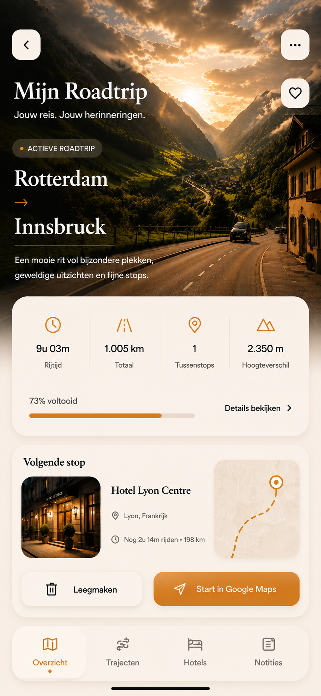

Dag 3 van 8
Alpen avontuur
Rotterdam → Innsbruck

Vandaag op de route
45 km Ionity Heiligenblut
over 2 uur Trafoi, Italië
aankomst 19:45
Dag 3 van 10
Mijn roadtrip
Oostenrijk → Italië
Vandaag · Dag 3
Innsbruck → Gardameer
Een rustige Alpenrit richting het water.
320 km
4u 15m
2 stops

Hotel vanavondHotel Riva del Garda · vanaf 15:00
Reis per dag
10 dagen
Dag 1
Rotterdam
→ Frankfurt
480 km · 5u 10m
Dag 2
Frankfurt
→ Innsbruck
460 km · 5u 30m
Vandaag · Dag 3
Innsbruck
→ Gardameer
320 km · 4u 15m · 2 stops
Dag 4
Gardameer
→ Toscane
410 km · 5u 20m
Dag 5
Toscane
→ Rome
280 km · 3u 45m
Dag 6
Rome
→ Amalfi
275 km · 3u 50m
Dag 7
Amalfi
Rustdag
0 km · vrije dag
Dag 8
Amalfi
→ Florence
520 km · 6u 10m
Dag 9
Florence
→ Zwitserland
610 km · 7u 05m
Dag 10
Zwitserland
→ Rotterdam
720 km · 8u 20mTotaal van je roadtrip
10.820km
68u 45mreistijd
10dagen
4landen
18stops
Rotterdam → Innsbruck
1.246 km · 14u 30m
Volgende stop
Hallstatt
188 km · ongeveer 2u 15m rijden